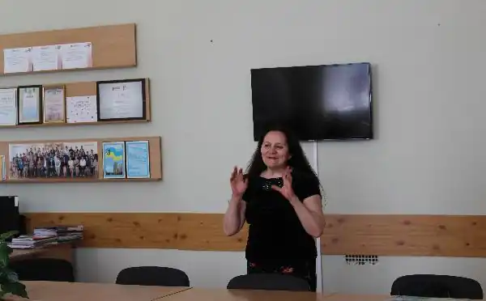

КОСЕНКО Лариса Андріївна (Леся Оленівська) –
Народилася 10 квітня 1956 року в селі Оленівка Борзнянського району. Працює кореспондентом Фонду Пантелеймона Куліша та редактором молодіжних програм "Європа-центр".
Талановитий журналіст, автор кількох документальних фільмів з літературознавства та про визначних людей України.